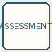
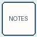
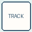
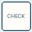

👀 Child Observation Form
Record children's interests, conversations, skills, discoveries, and learning moments during classroom experiences.
Access teacher-ready assessment resources including observation forms, documentation tools, developmental tracking pages, portfolio resources, and classroom assessment supports designed for Early Head Start, Head Start, Preschool, and Pre-K educators.

The Assessment Resource Library provides educators with practical tools to record children's learning, track development, document discoveries, and use observations to support intentional teaching decisions.
Find practical tools to help teachers observe children, document learning, track development, and plan meaningful next steps.
Capture children's conversations, actions, interests, problem solving, and discoveries during classroom experiences.
View Forms →Record learning moments through anecdotal notes, learning stories, photographs, and classroom documentation.
View Tools →Monitor children's growth across developmental areas through organized tracking resources.
View Trackers →Create meaningful collections of children's work, progress, reflections, and learning experiences.
View Resources →Use observations to plan intentional teaching experiences, activities, and learning extensions.
View Tools →Share children's growth, classroom experiences, and learning progress with families.
View Resources →Print and use classroom assessment resources to document learning, track growth, and support intentional teaching.
Record children's interests, conversations, skills, discoveries, and learning moments during classroom experiences.

Capture meaningful observations of children's development, interactions, and classroom experiences.
Collect children's artwork, photographs, reflections, and evidence of learning over time.

Support documentation of children's growth across developmental areas and learning goals.

Support intentional observation during play, learning centers, small groups, and classroom activities.
Use observations to plan future activities, teaching strategies, and learning extensions.
Find developmentally appropriate observation and documentation resources designed for different early childhood learning stages.
Support early development through observation of communication, movement, sensory exploration, relationships, and emerging skills.
Explore Resources →Document children's creativity, problem solving, language development, social skills, and classroom discoveries.
Explore Resources →Support school readiness through documentation of literacy, mathematics, independence, and developmental growth.
Explore Resources →Resources that help educators connect observations with intentional planning and meaningful classroom experiences.
Plan what to observe, what evidence to collect, and how to support children's learning.
Print Tool →Organize notes, photographs, work samples, and learning evidence in one place.
Print Tool →Connect observations with developmental goals and future learning opportunities.
Print Tool →Reflect on children's responses, teaching strategies, and next steps.
Print Tool →Collect and organize children's learning samples and classroom experiences.
Print Tool →Use assessment information to create future activities and learning extensions.
Print Tool →Assessment becomes more meaningful when families are included in understanding children's learning, development, interests, and accomplishments.
Share children's growth, classroom experiences, and learning milestones with families.
Use photographs, stories, and work samples to celebrate children's discoveries and achievements.
Create meaningful partnerships by sharing observations and inviting family insights.
Effective assessment is about noticing, understanding, and responding to children's learning. Use documentation to guide classroom experiences, support individual growth, and create meaningful next steps.